UIST ’25 · Full Paper
Buoyancé
Reeling helium-inflated balloons with mobile robots on the ground for mid-air tangible display, interaction, and assembly.
Abstract
We introduce a novel approach to spatially actuated tangible UI by controlling helium-inflated balloons (HIBs) in mid-air using mobile reeling robots, named ReelBots. With a relatively compact device form factor, the robots can manipulate HIBs in an extensive vertical range, reaching relatively high altitudes (20 m or more), thanks to its reeling mechanisms. The hardware offers diverse interactive functionalities and applications for representing abstract data in 3D space, reconfiguring lights and cameras in an everyday space, and assembling HIBs into diverse configurations. Our proof-of-concept implementation was developed based on omnidirectional mobile robots and a motion tracking system to demonstrate the novel approach of enriching 3D physical space. Our control software is designed to manipulate multiple robots to control the position of HIBs in real time via multiple options ranging from GUI control and tangible and gesture based controls.
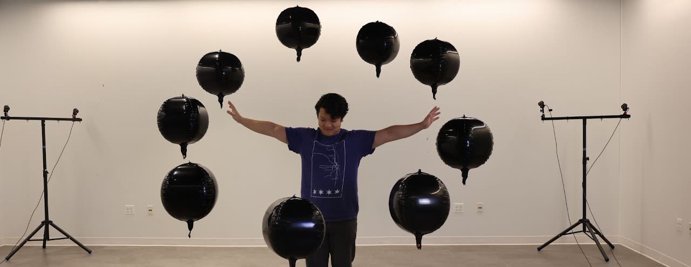
System
Each ReelBot is an omnidirectional mobile robot with a motorized reel. Its string tethers one balloon, so the robot sets the balloon’s horizontal position by driving and its height by reeling. A motion tracking system follows the robots, balloons, and people, and the control software coordinates multiple robots in real time through a GUI, tangible, and gesture-based control.
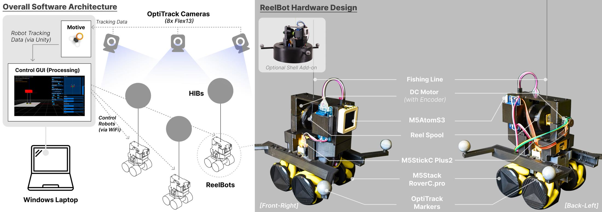
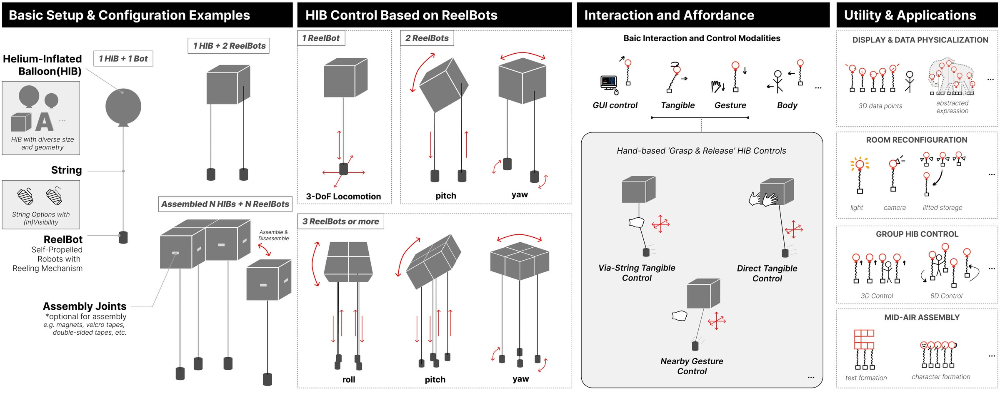
Interaction
Balloons can be controlled in three ways: by pulling on the string (via-string tangible control), by grabbing and moving the balloon itself (direct tangible control), or with hand gestures near the balloon (nearby gesture control).
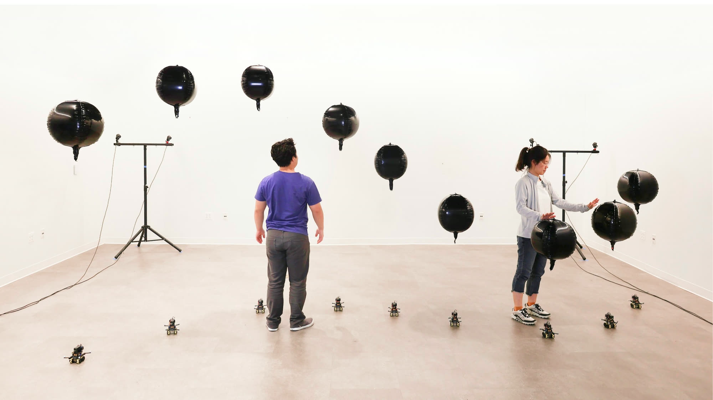
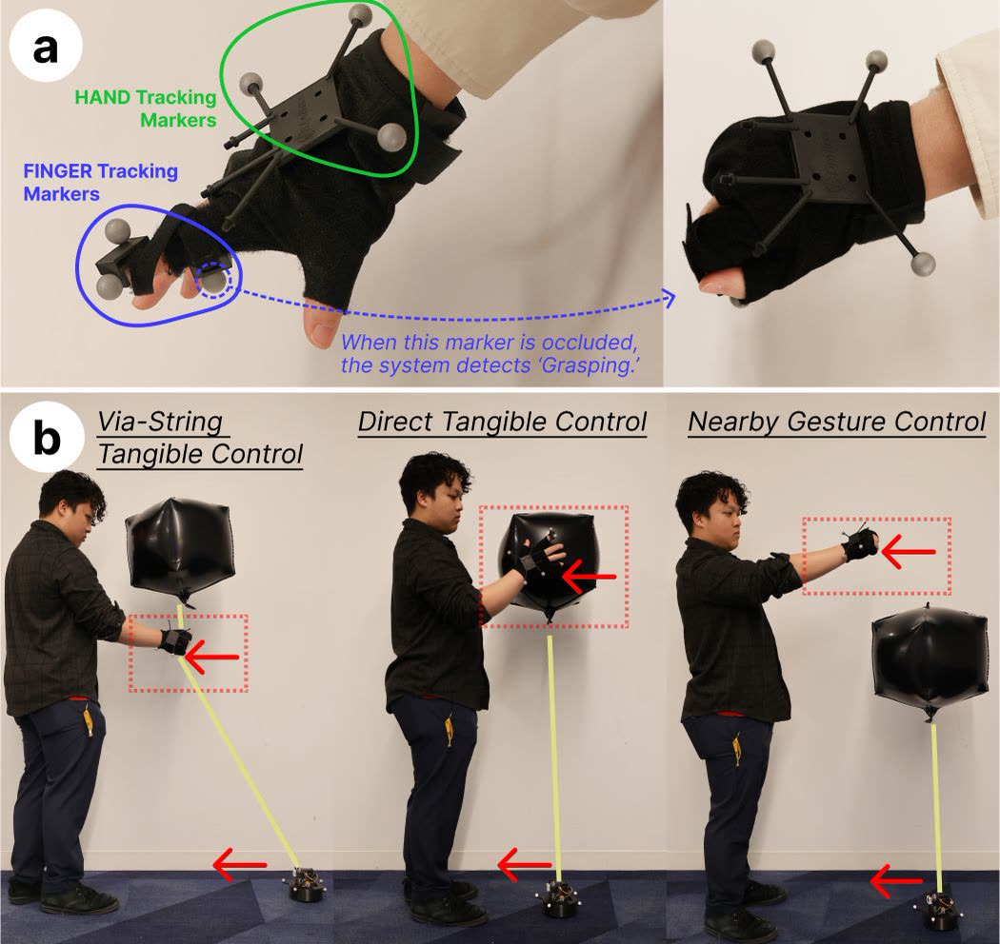
Applications
We explored information display (balloons tracing real-scale animals or mirroring a person’s pose), room-scale data physicalization, spatial lighting, a remotely controlled room-inspection camera, lifting and storing robots, and assembling balloons into letters and larger shapes.
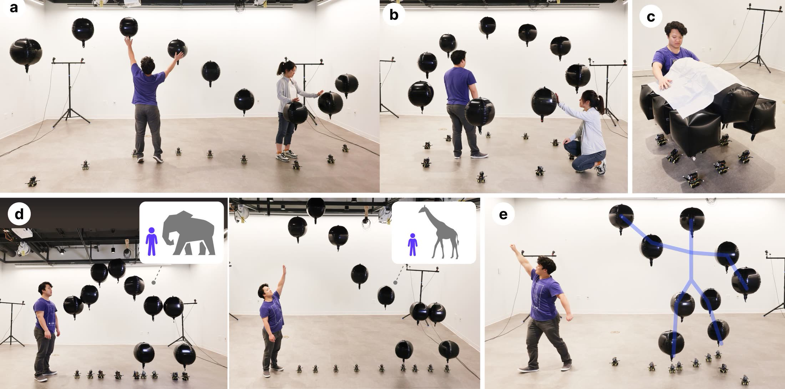
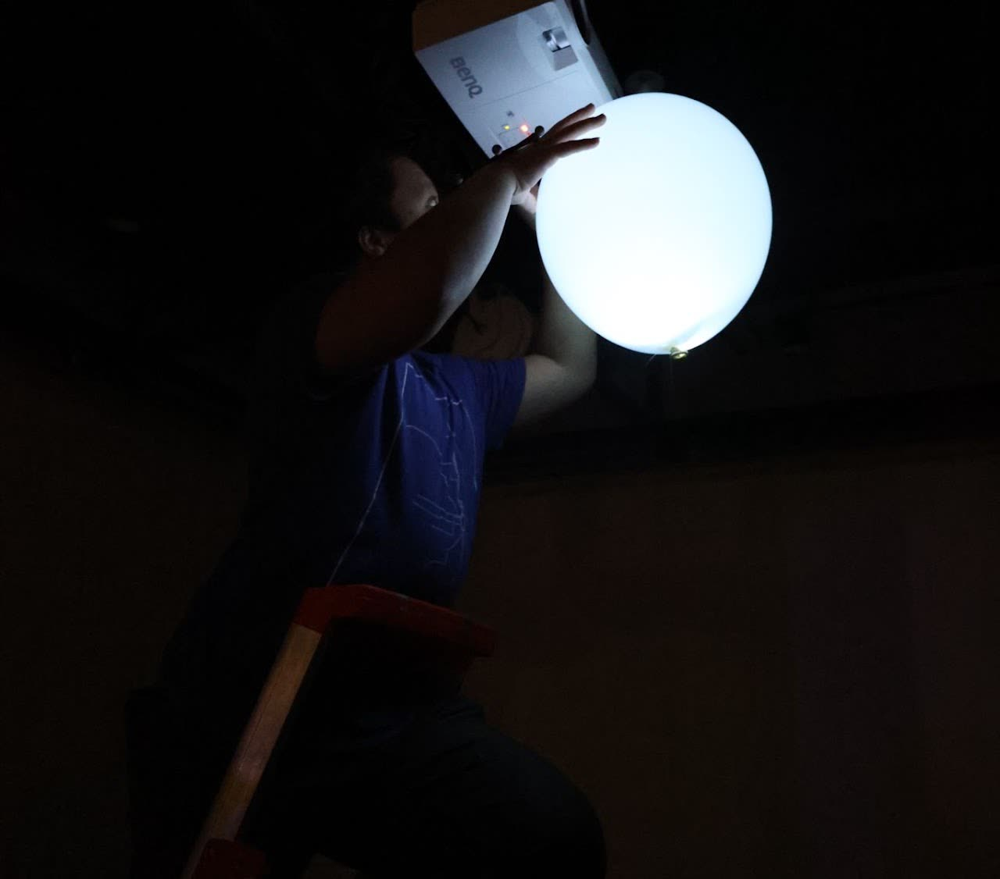
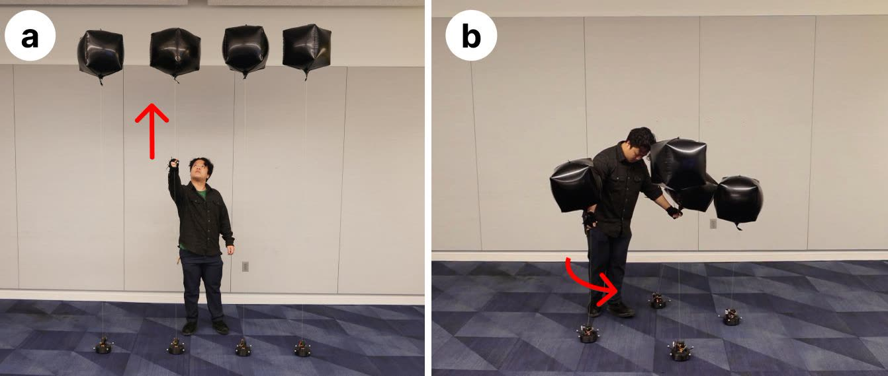
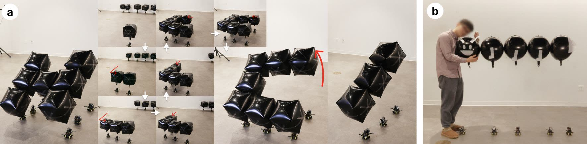
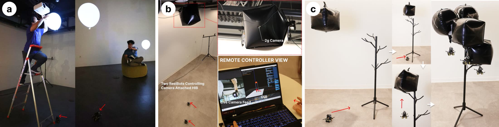
Evaluation
A technical evaluation measured reeling speed, lift capacity, and assembly-joint performance. A user study (N = 12) compared the three control methods on comfort, intuitiveness, and enjoyment, across target heights from below the knee to out of reach.
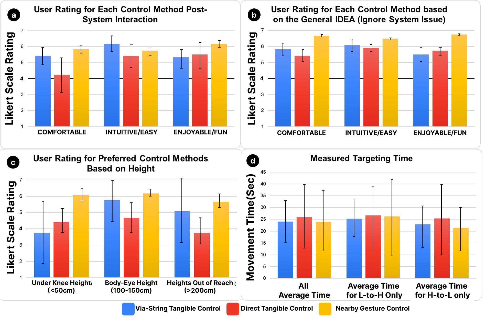
Video
Related
Cite
Alan Pham*, Yuxiao Li*, Miyu Fukuoka, and Ken Nakagaki. 2025. Buoyancé: Reeling Helium-Inflated Balloons with Mobile Robots on the Ground for Mid-Air Tangible Display, Interaction, and Assembly. In Proceedings of the 38th Annual ACM Symposium on User Interface Software and Technology (UIST ’25), Busan, Republic of Korea. ACM, New York, NY, USA, Article 174, 19 pages. https://doi.org/10.1145/3746059.3747768
@inproceedings{10.1145/3746059.3747768,
author = {Pham, Alan and Li, Yuxiao and Fukuoka, Miyu and Nakagaki, Ken},
title = {Buoyanc{\'e}: Reeling Helium-Inflated Balloons with Mobile Robots on the Ground for Mid-Air Tangible Display, Interaction, and Assembly},
year = {2025},
isbn = {9798400720376},
publisher = {Association for Computing Machinery},
address = {New York, NY, USA},
url = {https://doi.org/10.1145/3746059.3747768},
doi = {10.1145/3746059.3747768},
abstract = {We introduce a novel approach to spatially actuated tangible UI by controlling helium-inflated balloons (HIBs) in mid-air using mobile reeling robots, named ReelBots. With a relatively compact device form factor, the robots can manipulate HIBs in an extensive vertical range, reaching relatively high altitudes (20m or more), thanks to its reeling mechanisms. The hardware offers diverse interactive functionalities and applications for representing abstract data in 3D space, reconfiguring lights and cameras in an everyday space, and assembling HIBs into diverse configurations. Our proof-of-concept implementation was developed based on omnidirectional mobile robots and a motion tracking system to demonstrate the novel approach of enriching 3D physical space. Our control software is designed to manipulate multiple robots to control the position of HIBs in real time via multiple options ranging from GUI control and tangible and gesture based controls.},
booktitle = {Proceedings of the 38th Annual ACM Symposium on User Interface Software and Technology},
articleno = {174},
numpages = {19},
keywords = {Actuated Tangible User Interface, Spatial User Interface Display, Human-Robot Interaction, Mid-air Assembly, Embodied Interaction},
location = {Busan, Republic of Korea},
series = {UIST '25}
}- Actuation
- Mechanism Design
- Spatial Interfaces
- Fabrication
- Installation